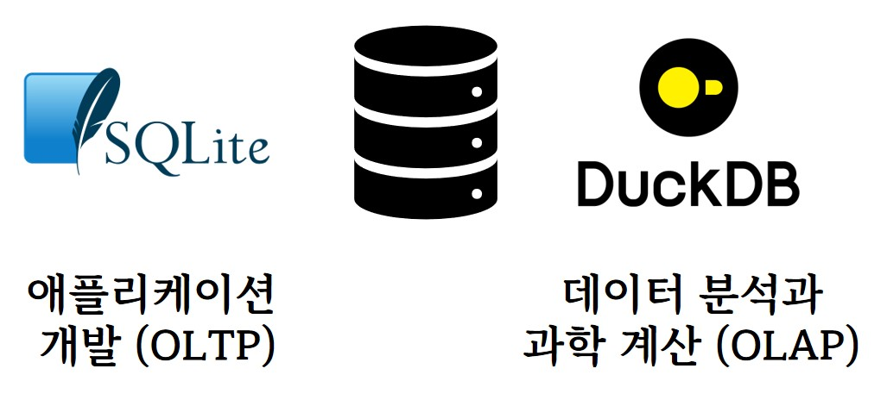
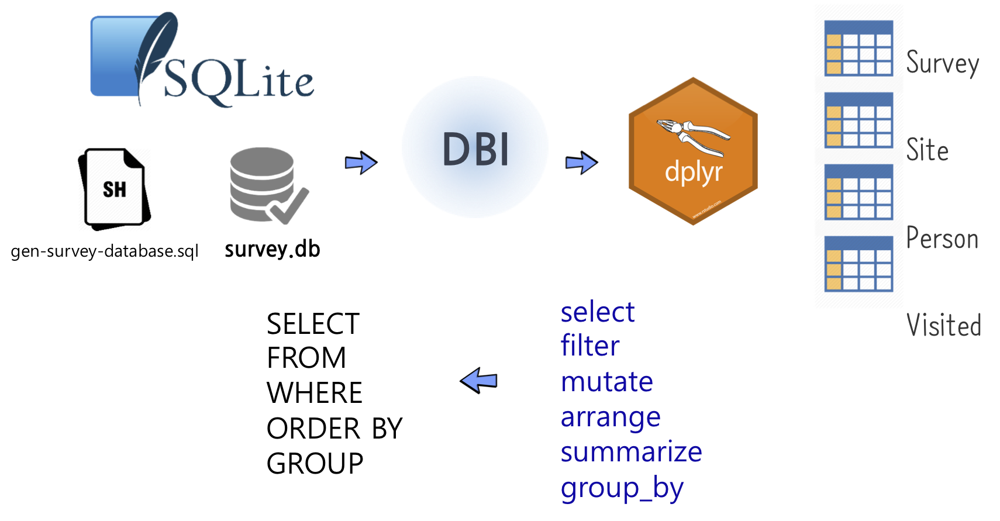

library(tidyverse)
library(duckdb)
crime_csv <- fs::dir_ls("data/crime/")
crime_raw <- crime_csv |>
enframe(value = "filepath") |>
select(-name) |>
mutate(data = map(filepath, read_csv)) |>
mutate(year = str_extract(filepath, "\\d{4}")) |>
select(year, data)
crime_tbl <- crime_raw |>
unnest(data) |>
janitor::clean_names()
crime_tbl |>
glimpse()
#> Rows: 707,153
#> Columns: 23
#> $ year <chr> "2021", "2021", "2021", "2021", "2021", "2021", "…
#> $ id <dbl> 12342615, 26262, 13209581, 13209369, 12374520, 13…
#> $ case_number <chr> "JE202211", "JE366265", "JG422927", "JG422777", "…
#> $ date <chr> "04/17/2021 03:20:00 PM", "09/08/2021 04:45:00 PM…
#> $ block <chr> "081XX S PRAIRIE AVE", "047XX W HARRISON ST", "01…
#> $ iucr <chr> "0325", "0110", "1563", "1153", "0486", "1153", "…
#> $ primary_type <chr> "ROBBERY", "HOMICIDE", "SEX OFFENSE", "DECEPTIVE …
#> $ description <chr> "VEHICULAR HIJACKING", "FIRST DEGREE MURDER", "CR…
#> $ location_description <chr> "RESIDENCE", "CAR WASH", "APARTMENT", "RESIDENCE"…
#> $ arrest <lgl> TRUE, TRUE, FALSE, FALSE, FALSE, FALSE, FALSE, FA…
#> $ domestic <lgl> FALSE, FALSE, FALSE, FALSE, TRUE, FALSE, FALSE, F…
#> $ beat <chr> "0631", "1131", "0411", "0915", "1123", "1412", "…
#> $ district <chr> "006", "011", "004", "009", "011", "014", "017", …
#> $ ward <dbl> 6, 24, 8, 11, 28, 35, 45, 25, 25, 20, 9, 44, 28, …
#> $ community_area <dbl> 44, 25, 45, 60, 27, 21, 16, 31, 31, 40, 73, 6, 28…
#> $ fbi_code <chr> "03", "01A", "17", "11", "08B", "11", "11", "17",…
#> $ x_coordinate <dbl> 1179448, 1144907, NA, NA, 1154131, NA, NA, NA, NA…
#> $ y_coordinate <dbl> 1851073, 1896933, NA, NA, 1900784, NA, NA, NA, NA…
#> $ year_2 <dbl> 2021, 2021, 2021, 2021, 2021, 2021, 2021, 2021, 2…
#> $ updated_on <chr> "09/14/2023 03:41:59 PM", "09/14/2023 03:41:59 PM…
#> $ latitude <dbl> 41.74663, 41.87319, NA, NA, 41.88358, NA, NA, NA,…
#> $ longitude <dbl> -87.61803, -87.74345, NA, NA, -87.70948, NA, NA, …
#> $ location <chr> "(41.746626309, -87.618031954)", "(41.873191445, …16 SQL 데이터셋
(Pandey 2023)
GPT-4와 Bard 같은 AI 모델의 자연어 처리 능력이 급격히 향상되면서, 자연어로 질문된 내용에 대한 SQL 쿼리를 생성하는 ’텍스트-투-SQL’과 같은 다양한 NLP 사용 사례에 대한 발전이 가속화되고 있다. 여러 접근 방식과 솔루션이 시장에 나오면서 어느 것이 가장 효율적인지, 어느 것이 정확한 답을 더 신뢰성 있게 생성하는지, 어느 것이 다양한 데이터셋에 가장 잘 적응하는지 평가하는 문제가 생겼다. 이 질문들에 답하기 위해 오픈소스 산업과 학계는 여러 벤치마크를 제시했지만, 오늘날 가장 많이 사용되는 세 가지는 WikiSQL, Spider, BIRD(BIg Bench for LaRge-scale Database Grounded Text-to-SQL Evaluation)이다. WikiSQL은 Salesforce에 의해 2017년 말에 소개된 최초의 대규모 텍스트-투-SQL 데이터 집합이지만, 단순함이라는 큰 단점이 있다. 제공되는 모든 SQL 쿼리는 SELECT, FROM, WHERE 절만을 포함하는 매우 간단하며, 데이터셋 내의 테이블들은 다른 테이블과의 연결이 없다. WikiSQL로 훈련된 모델은 새로운 데이터베이스에서도 작동할 수 있지만, 간단한 자연어 질문에 대해서만 답할 수 있다. 이러한 이유로 최근 텍스트-투-SQL 분야의 연구는 더 복잡한 벤치마크에 초점을 맞추고 있다. 실제로 WikiSQL 리더보드에는 2021년 이전의 제출물만 있으며, 테스트 정확도 90% 이상을 달성한 여러 제출물들이 있지만(가장 성능이 좋은 제출물은 93%에 도달함), 이제 실무자들은 WikiSQL로는 턱없이 부족한 훨씬 더 복잡한 쿼리 생성에 초점을 맞추고 있다.
Spider 데이터셋은 WikiSQL 데이터셋의 단점 중 일부를 보완하려고 한다. 예일 대학의 11명 학생들이 1,000시간 이상의 노력을 통해 개발된 Spider 데이터셋은 복잡성과 교차 도메인성이라는 두 가지 중요한 요소를 도입한다. 복잡성 측면에서 SQL 쿼리는 WikiSQL이 한정된 간단한 SELECT와 WHERE 절을 넘어서, 더 복잡한 GROUP BY, ORDER BY, HAVING 절과 중첩된 쿼리를 포함한다. 또한, 모든 데이터베이스는 외래 키를 통해 여러 테이블이 연결되어 있어 테이블 간에 조인하는 복잡한 쿼리를 가능하게 한다. 교차 도메인성 측면에서 Spider는 200개의 복잡한 데이터베이스를 많은 도메인에 걸쳐 포함하여, 테스트 세트에서 본 적 없는 데이터베이스를 포함시켜 모델의 일반화 가능성을 테스트할 수 있게 한다.
16.1 Sqlite3와 DuckDB
SQLite3와 DuckDB는 각각 OLTP(Online Transaction Processing)와 OLAP(Online Analytical Processing) 관점으로 살펴보면, SQLite3는 OLTP에 더 적합한 데이터베이스로, 애플리케이션 거래 처리(transaction)를 위한 운영 데이터 관리에 사용되고, 빠른 쓰기와 읽기, 낮은 지연 시간, 높은 트랜잭션 보장이 필요한 환경에 맞게 설계되었다. 특히, SQLite는 가벼운 구조와 서버리스 아키텍처로 인해 임베디드 시스템, 모바일 애플리케이션, 소규모 웹 애플리케이션에서 데이터를 저장하고 관리하는 데 자주 사용된다.
반면, DuckDB는 OLAP에 더 적합하며 데이터 분석 작업에 최적화된 데이터베이스로, 큰 규모 데이터셋에 대한 복잡한 쿼리와 데이터 분석을 빠르게 수행할 수 있다. DuckDB의 벡터화 쿼리 처리와 멀티 코어 시스템에서 병렬 처리 능력은 대용량 데이터 분석, 보고서 생성, 데이터 마이닝과 같은 작업에 탁월한 성능을 제공한다. DuckDB는 주로 데이터 과학자들과 분석가들이 사용하는 도구로써, 빅데이터의 효율적인 처리와 복잡한 분석 쿼리를 빠르게 실행시킬 수 있다.

16.2 시카고 범죄 데이터
crime_tbl |>
count(primary_type, sort = TRUE) |>
head(10) |>
ggplot(aes(x = fct_reorder(primary_type, n), y = n)) +
geom_col() +
coord_flip() +
labs(x = "범죄 유형", y = "범죄 건수", title = "시카고 범죄 유형별 건수")
DuckDB는 Analytical SQLite라는 별명을 갖고 있다. SQLite가 OLTP 데이터베이스라면, DuckDB OLAP 데이터베이스라고 볼 수 있다.
con_dd <- duckdb::dbConnect(duckdb::duckdb())
duckdb::dbWriteTable(con_dd, "crime_tbl", crime_tbl, overwrite = TRUE)
duckdb::dbListTables(con_dd)
#> [1] "crime_tbl"
dbGetQuery(con_dd, "SELECT COUNT(*) AS '범죄수' FROM crime_tbl")
#> 범죄수
#> 1 707153time <- function(call) {
print(system.time(call())[[1]])
}
time(\() duckdb::dbWriteTable(con_dd, "crime_tbl", crime_tbl, overwrite = TRUE))
#> [1] 0.71
time(\() dbGetQuery(con_dd, "SELECT COUNT(*) AS '범죄수' FROM crime_tbl"))
#> [1] 0library(RSQLite)
con_sqlite <- dbConnect(RSQLite::SQLite())
time(\() RSQLite::dbWriteTable(con_sqlite, "crime_tbl", crime_tbl, overwrite = TRUE))
#> [1] 1.75crime_schema <- DBI::dbGetQuery(con_dd, 'SELECT * FROM duckdb_tables;')
crime_schema |>
select(sql)
#> sql
#> 1 CREATE TABLE crime_tbl("year" VARCHAR, id DOUBLE, case_number VARCHAR, date VARCHAR, block VARCHAR, iucr VARCHAR, primary_type VARCHAR, description VARCHAR, location_description VARCHAR, arrest BOOLEAN, domestic BOOLEAN, beat VARCHAR, district VARCHAR, ward DOUBLE, community_area DOUBLE, fbi_code VARCHAR, x_coordinate DOUBLE, y_coordinate DOUBLE, year_2 DOUBLE, updated_on VARCHAR, latitude DOUBLE, longitude DOUBLE, "location" VARCHAR);complex_query <- "
SELECT
primary_type,
ROUND(AVG(latitude), 5) AS avg_latitude,
ROUND(AVG(longitude), 5) AS avg_longitude,
SUM(CASE WHEN arrest THEN 1 ELSE 0 END) AS total_arrests,
COUNT(*) AS total_crimes,
year
FROM
crime_tbl
WHERE
year >= '2021' AND year <= '2023'
GROUP BY
primary_type, year
HAVING
COUNT(*) > 100
ORDER BY
total_crimes DESC, primary_type
LIMIT 5;
"
dbGetQuery(con_dd, complex_query)
#> primary_type avg_latitude avg_longitude total_arrests total_crimes year
#> 1 THEFT 41.86707 -87.66762 2738 56770 2023
#> 2 THEFT 41.86597 -87.66691 2019 54853 2022
#> 3 BATTERY 41.83902 -87.66873 6726 43958 2023
#> 4 BATTERY 41.83833 -87.66838 5932 40924 2022
#> 5 THEFT 41.86354 -87.66865 1552 40806 2021작성된 SQL 쿼리는 시카고 범죄 데이터베이스에서 2021년부터 2023년까지 가장 흔한 범죄 유형 상위 5가지를 찾고, 이들의 평균 발생 위치, 체포 건수, 연도별 발생 횟수를 파악하는 것이다.
WHERE절: 범죄 발생 연도를 2021년부터 2023년 사이로 범위를 제한한다.GROUP BY절: 결과를 범죄 유형(primary_type)과 발생 연도(year)별로 그룹화한다.ROUND(AVG(latitude), 5)및ROUND(AVG(longitude), 5): 각 범죄 유형의 평균 위도와 경도를 계산하여 범죄가 일반적으로 발생하는 위치를 파악한다. 평균은 소수점 다섯째 자리까지 반올림된다.SUM(CASE WHEN arrest THEN 1 ELSE 0 END) AS total_arrests: 각 범죄 유형별로 발생한 총 체포 건수를 합산하고,arrest가 참일 때마다 1을 더하는 방식으로 계산한다.COUNT(*) AS total_crimes: 각 범죄 유형별로 발생한 총 범죄 건수를 계산한다.HAVING COUNT(*) > 100: 100건 이상 발생한 범죄 유형만을 필터링하여 신뢰성 있는 데이터만을 대상으로 한다.ORDER BY total_crimes DESC, primary_type: 총 범죄 건수가 많은 순으로 결과를 정렬하고, 동일한 건수일 경우 범죄 유형(primary_type)에 따라 정렬한다.LIMIT 5: 결과를 상위 5가지 범죄 유형으로 한정한다.
time(\() dbGetQuery(con_dd, complex_query) )
#> [1] 0.17
time(\() dbGetQuery(con_sqlite, complex_query) )
#> [1] 0.4817 survey.db
You are an expert in SQL. The following table definitions have been provided to you. Please convert my query into an appropriate SQL statement.
CREATE TABLE Person(
ident text,
personal text,
family text
);
CREATE TABLE Site(
name text,
lat real,
long real
);
CREATE TABLE Visited(
ident integer,
site text,
dated text
);
CREATE TABLE Survey(
taken integer,
person text,
quant text,
reading real
);
Let's write an SQL query to display the names of scientists on the screen.To write an SQL query that displays the names of scientists, we need to determine which table and column(s) contain the relevant information about the scientists. Based on the provided table definitions, it seems that the Person table holds the information about individuals, which likely includes scientists. The columns personal and family in the Person table seem to be the ones that store the names of individuals.
The query would be straightforward, as it involves selecting data from a single table without any joins or complex conditions. Here is the SQL statement:
SELECT personal, family
FROM Person;This query will display the personal (given name) and family (surname) of each individual in the Person table. If you need just the full names combined or have other specific requirements, the query can be adjusted accordingly.


17.1 프로그래밍
GUI 챗팅 인터페이스 대신 프로그래밍을 통해 파악해보자. 자연어로 SQL 프로그래밍 들어가기 전에 기본적인 설정을 다음과 같이 설정한다. 파이썬에서 OpenAI의 GPT 모델을 사용해 사용자 질문에 자동으로 답하는 스크립트를 작성한다.
- 모듈 가져오기:
os는 운영 체제와 상호작용하고, 환경 변수에 접근하는 데 사용된다.openai는 OpenAI의 Python 클라이언트 라이브러리로, GPT 모델을 사용하는 데 필요하다.dotenv는.env파일에서 환경 변수를 로드하는 데 사용된다.
- 환경 변수 로드:
load_dotenv()는 프로젝트 루트의.env파일로부터 환경 변수를 로드한다..env파일에 저장된OPENAI_API_KEY환경변수를 가져온다.
- OpenAI 클라이언트 초기화:
OpenAI를 사용해 API 클라이언트를 생성한다.api_key=os.getenv('OPENAI_API_KEY')는 환경 변수에서OPENAI_API_KEY를 가져와 클라이언트를 인증한다.
- 채팅 완성 생성:
client.chat.completions.create는 OpenAI의 채팅 완성 API를 사용해 채팅 대화를 생성한다.messages는 사용자의 입력 메시지를 담고 있다. 이 경우 “SQL이 뭔지 간략하게 설명해줘”라는 질문이 포함되어 있다.model="gpt-3.5-turbo"는 사용할 GPT 모델을 지정한다.
- 결과 출력:
print(chat_completion.choices[0].message.content)는 생성된 채팅 대화에서 첫 번째 선택 항목의 메시지 내용을 출력한다. 이는 GPT 모델이 생성한 답변을 보여준다.
import os
from openai import OpenAI
from dotenv import load_dotenv
load_dotenv()
client = OpenAI(
api_key=os.getenv('OPENAI_API_KEY'),
)
chat_completion = client.chat.completions.create(
messages=[
{
"role": "user",
"content": "SQL이 뭔지 간략하게 설명해줘",
}
],
model="gpt-3.5-turbo",
)
print(chat_completion.choices[0].message.content)SQL(Structured Query Language)은 데이터베이스 관리 시스템(DBMS)에서 데이터를 관리하고 조작하는 데 사용하는 표준화된 프로그래밍 언어입니다. SQL은 사용자가 데이터베이스에 대한 쿼리를 작성하여 데이터를 검색, 삽입, 수정, 삭제하는 등 데이터베이스에 대한 다양한 작업을 수행할 수 있게 해줍니다. SQL은 간결한 구문과 명확한 명령어를 사용하며, 이를 통해 데이터베이스에 저장된 대량의 데이터를 효율적으로 조작할 수 있습니다. SQL은 관계형 데이터베이스 시스템(RDBMS)에서 주로 사용되며, 사용자의 요구에 따라 데이터를 가져오거나 수정하는 등 다양한 작업을 수행할 수 있으므로 데이터베이스 관리에 필수적인 언어로 사용됩니다.sql_message = """
You are an expert in SQL. The following table definitions have been provided to you. Please convert my query into an appropriate SQL statement.
CREATE TABLE Person(
ident text,
personal text,
family text
);
CREATE TABLE Site(
name text,
lat real,
long real
);
CREATE TABLE Visited(
ident integer,
site text,
dated text
);
CREATE TABLE Survey(
taken integer,
person text,
quant text,
reading real
);
Let's write an SQL query to display the names of scientists on the screen.
"""
chat_completion = client.chat.completions.create(
messages=[
{
"role": "user",
"content": sql_message,
}
],
model="gpt-3.5-turbo",
)
print(chat_completion.choices[0].message.content)To write an SQL query to display the names of scientists on the screen, we need to identify what table contains the names of scientists. Based on the given table definitions, it appears that the "Person" table contains the relevant information. Therefore, we can use the following SQL statement to achieve the desired result:
SELECT personal, family
FROM Person;def create_message(query):
class message:
def __init__(message, system, user):
message.system = system
message.user = user
system_message = """
You are an expert in SQL. The following table definitions have been provided to you. Please convert my query into an appropriate SQL statement. \n
CREATE TABLE Person(
ident text,
personal text,
family text
);
CREATE TABLE Site(
name text,
lat real,
long real
);
CREATE TABLE Visited(
ident integer,
site text,
dated text
);
CREATE TABLE Survey(
taken integer,
person text,
quant text,
reading real
); \n
"""
user_message = "No explanation. Write only SQL query that returns - {}"
system = system_message
user = user_message.format(query)
m = message(system = system, user = user)
return m
query = "display the names of scientists on the screen"
msg = create_message(query = query)
# print(msg.system)
print(msg.user)Write an SQL query that returns - display the names of scientists on the screenquery = "display the names of scientists on the screen"
prompt = create_message(query = query)
response = client.chat.completions.create(
messages = [
{
"role": "system",
"content": prompt.system
},
{
"role": "user",
"content": prompt.user
}
],
model="gpt-3.5-turbo",
)
sql = response.choices[0].message.content
print(sql)'SELECT personal FROM Person;'def translate_sql(query):
prompt = create_message(query = query)
response = client.chat.completions.create(
messages = [
{
"role": "system",
"content": prompt.system
},
{
"role": "user",
"content": prompt.user
}
],
model="gpt-3.5-turbo",
)
sql = response.choices[0].message.content
return sql
translate_sql(query = 'aggregate the hours for each scientist separately')'SELECT person, SUM(reading) AS total_hours\nFROM Survey\nGROUP BY person;'17.2 dplyr 연결
17.3 R에서 바라본 SQL
NoSQL과 빅데이터가 주목을 받고 있지만, 데이터 분석을 하는 입장에서는 여전히 SQL의 중요성이 크다. SQL에 대한 이해는 데이터 조작의 기본을 다지는 데 필수적이며, 이를 바탕으로 DBI 패키지를 사용해 dplyr과 연결하여 활용하는 방법을 살펴볼 수 있다.

R 개발자들은 데이터 분석을 할 때 dplyr을 사용하고, 데이터베이스 작업을 할 때는 SQL을 사용하는 것이 일반적인 작업 흐름이었다. 이렇게 두 가지 다른 도구를 사용하는 것은 동일한 작업을 중복해서 수행한다는 불편함을 가져왔다. 그러나 dplyr을 다양한 데이터베이스 시스템에 DBI와 odbc와 연결하면 문제를 해결할 수 있다. 즉, dplyr 동사를 직접 사용하여 SQL 작업을 수행할 수 있어 dplyr 동사를 데이터베이스에 직접 던져서 작업을 수행할 수 있는 중간 통역이 제공되어 보다 효율적으로 작업을 진행할 수 있게 된다.
17.3.1 SQL 자료처리
자료를 원하는 방향으로 처리하기 위해서는 다음과 같은 다양한 기본적인 자료 처리 방법을 조합하여 사용한다.
- 데이터 선택하기
- 정렬과 중복 제거하기
- 필터링(filtering)
- 새로운 값 계산하기
- 결측 데이터 (Missing Data)
- 집합 (Aggregation)
- 데이터 조합하기 (Combining Data)
# 칼럼과 행 선택
SELECT 칼럼명1, 칼럼명2....칼럼명N
FROM 테이블명
WHERE 조건;
# 그룹에 따른 정렬 및 총계(aggregation)
SELECT SUM(칼럼명)
FROM 테이블명
WHERE 조건
ORDER BY 칼럼명 {오름차순|내림차순};
GROUP BY 칼럼명;17.3.2 SQLite와 실습 데이터베이스
먼저 이론을 이해하는 것과 더블어 예제 데이터베이스를 설치하고 실습을 진행하기 위해서 먼저 명령-라인을 사용하여 어떻게 디렉토리 여기저기 이동하는지와 명령-라인에서 명령문을 어떻게 실행하는지 숙지할 필요가 있다.
이런 주제와 친숙하지 않다면, 유닉스 쉘(Unix Shell) 학습을 참조한다. 우선, SQLite 데이터베이스가 어떻게 동작하는지 설명을 할 필요가 있다.
인터랙티브하게 학습을 수행하기 위해서는 설치 방법에 언급된 SQLite 를 참조하여 설치하고, 학습자가 선택한 위치에 “software_carpentry_sql” 디렉토리를 생성한다. 예를 들어,
- 명령-라인 터미널 윈도우를 연다.
- 다음과 같이 명령어를 타이핑해서 디렉토리를 생성한다.
$ mkdir ~/swc/sql- 생성한 디렉토리로 현재 작업 디렉토리를 변경한다.
$ cd ~/swc/sql17.4 SQLite 설치 1
느긋한 계산법
데이터베이스를 다룰 때, dplyr은 가능한 느긋(laziness)하게 동작한다.
- 명시적으로 요청하지 않는 한, 데이터를 R 환경으로 바로 가져오지 않는다.
- 가능한 마지막 순간까지 작업을 지연시킨다 - 작업하고 싶은 모든 것을 모아 한 단계로 데이터베이스로 보낸다.
17.5 SQLite DB 연결/설치 테스트
생성된 데이터베이스에 연결하기 위해서, 데이터베이스를 생성한 디렉토리 안에서 SQLite를 시작한다. 그래서 ~/swc/sql 디렉토리에서 다음과 같이 타이핑한다.
root@hangul:~/swc/sql$ sqlite3 survey.dbsqlite3 survey.db 명령문이 데이터베이스를 열고 데이터베이스 명령-라인 프롬프트로 안내한다. SQLite에서 데이터베이스는 플랫 파일(flat file)로 명시적으로 열 필요가 있다. 그리고 나서 SQLite 시작되고 sqlite로 명령-라인 프롬프트가 다음과 같이 변경되어 표시된다.
SQLite version 3.20.0 2017-08-01 13:24:15
Enter ".help" for usage hints.
Connected to a transient in-memory database.
Use ".open FILENAME" to reopen on a persistent database.
sqlite> 다음 출력결과가 보여주듯이 .databases 명령문으로 소속된 데이터베이스 이름과 파일 목록을 확인한다.
sqlite> .databases
seq name file
--- --------------- ----------------------------------------------------------
0 main ~/novice/sql/survey.db다음과 같이 타이핑해서 필요한 “Person”, “Survey”, “Site” “Visited” 테이블이 존재하는 것을 확인한다. .table의 출력결과는 다음과 같다.
sqlite> .tables
Person Site Survey Visited18 dplyr 동사로 데이터베이스 작업
18.1 데이터베이스 연결
가장 먼저 앞에서 생성한 sqlite3 데이터베이스에 R과 연결시킨다. 그리고 연결된 데이터베이스에 들어있는 테이블을 살펴본다.
# 0. 환경설정 -----------------------
library(dbplyr)
library(tidyverse)
# 1. 데이터 연결 -----------------------
survey_con <- DBI::dbConnect(RSQLite::SQLite(), "data/survey.db")
dbListTables(survey_con)
#> [1] "Person" "Site" "Survey" "Visited"18.2 SQL을 직접 던지기
dbGetQuery 명령어를 통해 연결된 con을 통해 데이터베이스에 질의문(query)를 직접 던질 수 있다.
# 2. SQL 활용 -----------------------
dbGetQuery(survey_con, 'SELECT * FROM Person LIMIT 5')
#> id personal family
#> 1 dyer William Dyer
#> 2 pb Frank Pabodie
#> 3 lake Anderson Lake
#> 4 roe Valentina Roerich
#> 5 danforth Frank Danforth18.3 dplyr 동사 활용
tbl 함수로 con 으로 연결된 데이터베이스의 특정 테이블 “Survey”를 뽑아낸다.
# 3. dplyr 방식 -----------------------
survey_df <- tbl(survey_con, "Survey")
head(survey_df)
#> # Source: SQL [6 x 4]
#> # Database: sqlite 3.41.2 [D:\tcs\gpt-sql\data\survey.db]
#> taken person quant reading
#> <int> <chr> <chr> <dbl>
#> 1 619 dyer rad 9.82
#> 2 619 dyer sal 0.13
#> 3 622 dyer rad 7.8
#> 4 622 dyer sal 0.09
#> 5 734 pb rad 8.41
#> 6 734 lake sal 0.0518.4 데이터프레임 변환
tbl 함수로 con 으로 연결된 데이터베이스의 특정 테이블 “Survey”를 뽑아낸 상태는 아직 R에서 작업이 가능한 데이터프레임이 아니라 collect 함수를 활용해서 데이터프레임으로 변환시켜 후속 작업을 R에서 실행한다.
# 4. 데이터프레임 변환 -----------------------
survey_df %>% collect() %>%
ggplot(aes(x= quant, y=reading)) +
geom_boxplot()
18.5 SQL 변환 과정 살펴보기
show_query 함수를 사용해서 dplyr 동사가 SQL 질의문으로 변환된 상황을 살펴볼 수도 있다.
# 5. 내부 SQL 변환과정 살펴보기 --------------
survey_df |>
filter(quant == "sal") |>
show_query()
#> <SQL>
#> SELECT *
#> FROM `Survey`
#> WHERE (`quant` = 'sal')18.6 데이터베이스 연결 끊기
데이터베이스는 혼자 사용하는 것이 아니라 사용하지 않는 경우 필히 연결시켜 놓은 con을 반듯이 끊어 놓는다.
# 7. 연결 끊기 -----------------------
dbDisconnect(survey_con)